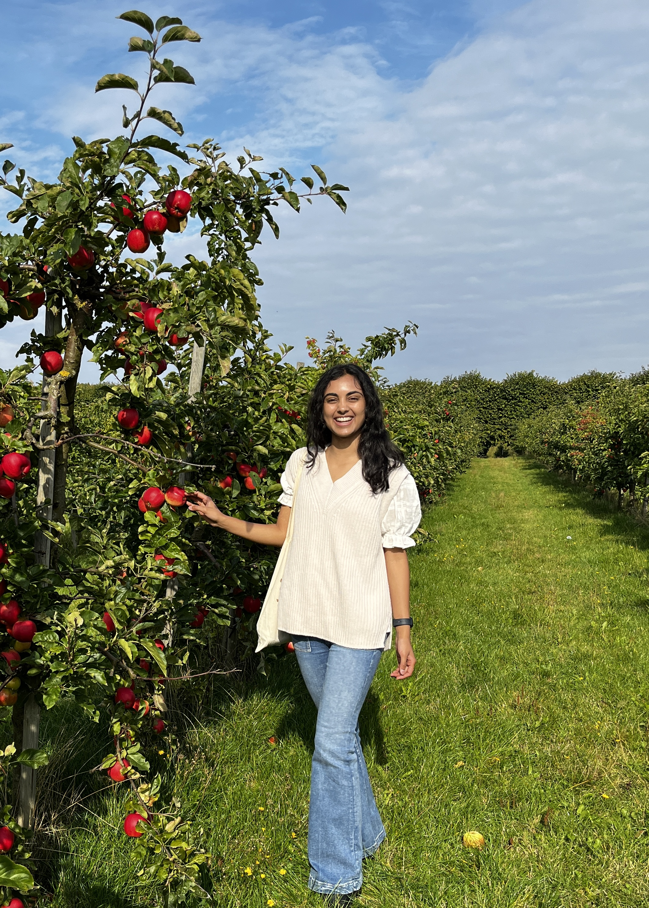

Nice to meet you!
I’m
Aarushi Venkatakrishnan - a UX/Product Designer
finishing up
my senior
year at Duke University, studying
Computer Science, Biology,
and Visual Media Studies.
This website combines some case studies, passion projects, and hobbies. Explore! I hope you have fun seeing what
I’ve been up to, and I’m happy to share more upon request.

At an apple orchard in Copenhagen, Denmark where I’m studying
abroad for the
semester.